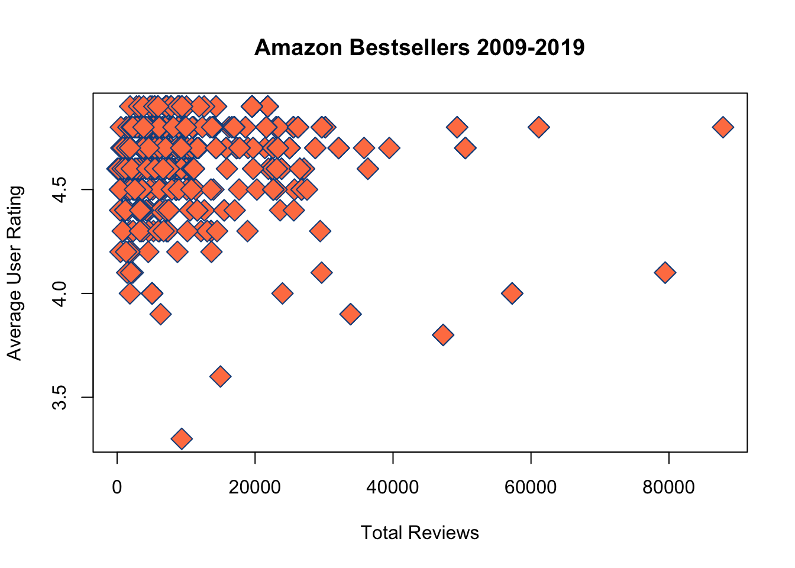

5 Dataset Ingest and Plotting

Reading data into R is a regular practice. R can ingest almost any type of file including CSV, Excel, Binary, XML, JSON, and many more. Today, we’re going to read in a Microsoft Excel file into R. This file contains data on best-selling books from Amazon between 2009 and 2019. Before we begin, we will need to download the amazon_bestsellers.xlxs file from the course datasets folder.
5.1 Installing a Package
So far, we’ve only been using functions that are part of the base package and are automatically loaded into each session by RStudio. There are over 10,000 R packages available for download from R’s package repository. All of these packages are free and contain pre-written functions for just about any computing purpose. Today, we’re going to use the readxl package. This package helps us read Microsoft Excel files in R. Let’s load in this package.
Error in library(readxl) : there is no package called ‘readxl’. This package is not currently installed. We can install the function now using the install.packages() function from the pre-loaded base package.
You may need to select a CRAN Mirror before installing. CRAN stands for Comprehensive R Archive Network and it is a repository for R packages that is a replica of the primary R package database. You can select any of these mirrors, but it is recommended that you choose a mirror located in the United States if RStudio asks you to choose one.
Only use the install.packages() function in the console. Why? We only need to install a package once. After the package is installed, we will need to load the package into each R session but we will not need to install it again.
After readxl is installed correctly, you’ll see a message that looks like this;
The downloaded binary packages are in /var/folders/6m/1b7gn_m93g9380p1jxvm2_700000gr/T//Rtmpcuw03I/downloaded_packages
This is the location on your computer where the package and all it’s functions are stored. We don’t need to worry about the location as R handles this information for us. We also don’t need to worry about packages taking up significant space on our hard drives. R packages are small in size. Now that readxl is installed, we can load it in via the library() function like we did above. This time, however, it should load in without any errors.
Wonderful, now we can use functions from the readxl package. What happens if we try and use a function from readxl without first loading the package? R will not understand what you mean and return an error. We must always load in package with each R session and before we use a function in a script. This is why we load in packages that we need at the top of every R script - so they’re run first.
5.2 Reading Data
We’re ready to use the readxl package. What function can we use from this package to load in our dataset? Remember the help() function where we can find our more information on functions? We can use ??readxl in the R console to find out more information on functions within this package.
The ?? function runs a search on every function/package we have in R and looks for functions/packages containing readxl. Look for examples that begin with readxl::. This notation is used to inform us of packages and functions, i.e. package::function. Technically speaking, we don’t have to load in a package if we use this notation…but it’s a lot easier to just load in the package than to code every function as package::function. The notation of package::function is primarily used by certain software developers. For our purposes, loading in a package at the top of the script is perfectly acceptable and recommended. Remember, our goal is just to tell R where to find a function so we can use it.
Now that we have searched, we can see a line that reads as: readxl::read_excel Read xls and xlsx files. We will use this function, read_excel, to read our amazon_bestsellers.xlxs. What arguments does the read_excelfunction take? We can use our help() function to find out.
A shortcut for the help function is a single ? and is used like so…
There are many arguments we can tinker with here if we needed to, but we only need to be concerned with the path argument that defines the “Path to the xls/xlsx file”.
5.3 Paths
A path is a series of folder names that directs the computer to the location of a file. For example, if we download a file called amazon_bestsellers.xlsx, it is likely residing in our downloads folder. Our job is to find the path to that file. It might look like /Users/your_name/Downloads/amazon_bestsellers.xlsx on Mac or C:\your_name\Downloads\amazon_bestsellers.xlsx, but is there a way to check for it exactly? Let’s introduce the getwd(), or get working directory, function.
My current directory (aka path) is /Users/james. This is where the “Home” direcoty is located in the files pane of our bottom right hand quadrant. Thus, in order for me to navigate to the Downloads folder, I simply need to type "Downloads/amazon_bestsellers.xlsx". Additionally, if I wanted to, I could change the current path of the working directory with the setwd() function (aka set working directory).
Now, if I use getwd() again…
I find that my new working directory is /Users/james/Downloads. Thus, my full path to the amazon_bestsellers.xlsx file is /Users/james/Downloads/amazon_bestsellers.xls.
5.3.2 Reading in the File
Now that we have the path, we can finally use our read_excel function.
# open our amazon bestsellers file using read_excel from the readxl package
amzn = read_excel(path = "/Users/james/Downloads/amazon_bestsellers.xlsx")## [1] "tbl_df" "tbl" "data.frame"We read in our file succesfully but it was read in as a tibble dataframe by the read_excel function. This is a more advanced form of a dataframe that goes beyond the scope of this course. Let’s convert it to just a standard data frame using our data.frame() function.
# overwrite our amzn tibble dataframe and convert it to a standard dataframe
amzn = data.frame(amzn)
class(amzn)## [1] "data.frame"Much better. Now let’s print out the first few rows of the amzn dataframe using the head() function to get a feel for the dataset…
## Name
## 1 10-Day Green Smoothie Cleanse
## 2 11/22/63: A Novel
## 3 12 Rules for Life: An Antidote to Chaos
## 4 1984 (Signet Classics)
## 5 5,000 Awesome Facts (About Everything!) (National Geographic Kids)
## 6 A Dance with Dragons (A Song of Ice and Fire)
## Author User.Rating Reviews Price Year Genre
## 1 JJ Smith 4.7 17350 8 2016 Non Fiction
## 2 Stephen King 4.6 2052 22 2011 Fiction
## 3 Jordan B. Peterson 4.7 18979 15 2018 Non Fiction
## 4 George Orwell 4.7 21424 6 2017 Fiction
## 5 National Geographic Kids 4.8 7665 12 2019 Non Fiction
## 6 George R. R. Martin 4.4 12643 11 2011 FictionHere is a description of what this file contains.
| Variable Name | Definition |
|---|---|
| Name | Book Title |
| Author | Author of the Book |
| User Rating | Amazon book rating as of 10/13/2020 |
| Reviews | Total number of book reviews |
| Price | Book price as of 10/13/2020 |
| Year | Year it was in the top 50 bestsellers on Amazon |
| Genre | Book Genre |
We can actually sort the data by any of the variables we want using the order() function. Let’s order the dataframe based on the User Rating.
Error: unexpected symbol in "order(amzn$User Rating". This is an example of how spaces are bad. R is unable to get around the space between User and Rating in thr variable name. Thus, we will need to rename this variable name to get rid of this.
## [1] 4.7 4.6 4.7 4.7 4.8 4.4 4.7 4.7 4.7 4.6 4.6 4.6 4.6 4.5 4.6 4.5 4.6 4.4
## [19] 4.5 4.8 4.6 4.6 3.9 4.6 4.3 4.6 4.7 4.2 4.6 4.6 4.8 4.7 4.8 4.8 4.8 4.7
## [37] 4.7 4.7 4.6 4.5 4.9 4.9 4.8 4.6 4.8 4.5 4.7 4.7 4.7 4.7 4.7 4.7 4.7 4.3
## [55] 4.8 4.8 4.6 4.6 4.8 4.4 4.6 4.3 4.2 4.8 4.8 4.8 4.8 4.6 4.6 4.5 4.5 4.8
## [73] 4.8 4.8 4.6 4.6 4.6 4.5 4.6 4.7 4.8 4.9 4.9 4.9 4.9 4.9 4.9 4.9 4.8 4.6
## [91] 4.5 4.5 4.3 4.5 4.5 4.7 4.7 4.7 4.7 4.7 4.6 4.6 4.7 4.4 4.4 4.5 3.8 3.8
## [109] 4.5 4.2 4.7 4.7 4.7 4.7 4.7 4.4 4.7 4.4 4.6 4.6 4.6 4.5 4.6 4.8 4.8 4.8
## [127] 4.8 4.8 4.6 4.6 4.6 4.6 3.6 4.8 4.6 4.0 4.0 4.0 4.6 4.5 4.5 4.5 4.5 4.8
## [145] 4.8 4.8 4.9 4.9 4.6 4.4 4.8 4.9 4.8 4.9 4.0 4.9 4.9 4.9 4.7 4.8 4.8 4.7
## [163] 4.7 4.4 4.4 4.8 4.7 4.7 4.7 4.7 4.7 4.3 4.8 4.8 4.9 4.7 4.8 4.6 4.8 4.8
## [181] 4.3 4.4 4.1 4.6 4.4 4.4 4.8 4.9 4.9 4.9 4.9 4.9 4.9 4.6 4.5 4.6 4.5 4.6
## [199] 4.7 4.7 4.6 4.6 4.8 4.8 4.5 4.5 4.5 4.9 4.6 4.6 4.6 4.6 4.6 4.5 4.5 4.4
## [217] 4.8 4.5 4.1 4.9 4.5 4.5 4.2 4.8 4.8 4.8 4.5 4.7 4.8 4.7 4.7 4.7 4.4 4.6
## [235] 4.6 4.6 4.5 4.5 4.5 4.8 4.8 4.6 4.7 4.6 4.9 4.9 4.9 4.9 4.9 4.9 4.9 4.9
## [253] 4.9 4.8 4.2 4.6 4.6 4.5 4.3 4.6 4.6 4.6 4.7 4.7 4.8 4.8 4.8 4.8 4.7 4.3
## [271] 4.3 4.5 4.5 4.5 4.5 4.5 4.5 4.5 4.5 4.5 4.5 4.8 4.6 4.6 4.7 4.7 4.6 4.6
## [289] 4.9 4.9 4.8 4.8 4.6 4.8 4.8 4.7 4.7 4.8 4.1 4.7 4.6 4.6 4.6 4.9 4.0 4.0
## [307] 4.0 4.0 4.0 4.0 4.0 4.0 4.0 4.5 4.6 4.5 4.4 4.4 4.3 4.3 4.7 4.7 4.7 4.7
## [325] 4.7 4.8 4.8 4.8 4.8 4.8 4.8 4.6 4.6 4.6 4.6 4.7 4.7 4.7 4.7 4.6 4.7 4.7
## [343] 4.7 4.8 4.2 4.8 4.7 4.6 4.6 4.8 4.8 4.8 4.8 3.3 4.7 4.3 4.3 4.3 4.8 4.4
## [361] 4.8 4.8 4.8 4.1 4.0 4.7 4.7 4.7 4.7 4.6 4.6 4.6 4.6 4.6 4.6 4.7 4.7 4.7
## [379] 4.7 4.7 4.7 4.8 4.1 4.1 4.7 4.7 4.7 4.7 4.4 4.4 4.8 4.8 3.9 3.9 4.4 4.4
## [397] 4.4 4.5 4.7 4.3 4.6 4.8 4.8 4.8 4.8 4.8 4.8 4.7 4.7 4.7 4.8 4.8 4.7 4.7
## [415] 4.7 4.3 4.3 4.7 4.8 4.8 4.9 4.4 4.4 4.5 4.5 4.5 4.5 4.4 4.8 4.2 4.8 4.9
## [433] 4.8 4.7 4.5 4.8 4.6 4.8 4.8 4.4 4.4 4.4 4.4 4.4 4.3 4.3 4.8 4.8 4.8 4.5
## [451] 4.4 4.8 4.8 4.6 4.3 4.3 4.6 4.6 4.8 4.6 4.6 4.6 4.5 4.8 4.6 4.6 4.6 4.7
## [469] 4.7 4.7 4.4 4.4 4.7 4.7 4.8 4.7 4.9 4.9 4.9 4.9 4.9 4.9 4.9 4.6 4.6 4.6
## [487] 4.9 4.9 4.9 4.9 4.8 4.8 4.7 4.7 4.6 4.6 4.5 4.5 4.3 4.3 4.6 4.6 4.6 4.6
## [505] 4.3 4.8 4.8 4.8 4.8 4.8 4.6 4.8 4.5 4.7 4.5 4.8 4.8 4.8 4.8 4.8 4.3 4.9
## [523] 4.8 4.7 4.8 4.5 4.6 4.7 4.7 4.8 4.4 4.4 4.4 4.8 4.8 4.8 4.6 4.4 4.5 4.2
## [541] 4.8 4.8 4.8 4.8 4.8 4.9 4.7 4.7 4.7 4.7# create new column named User_Rating that doesn't contain spaces and give it the values of the original User Rating variable name
amzn['User_Rating'] = amzn[,3]
# print the first few lines of amzn
head(amzn)## Name
## 1 10-Day Green Smoothie Cleanse
## 2 11/22/63: A Novel
## 3 12 Rules for Life: An Antidote to Chaos
## 4 1984 (Signet Classics)
## 5 5,000 Awesome Facts (About Everything!) (National Geographic Kids)
## 6 A Dance with Dragons (A Song of Ice and Fire)
## Author User.Rating Reviews Price Year Genre
## 1 JJ Smith 4.7 17350 8 2016 Non Fiction
## 2 Stephen King 4.6 2052 22 2011 Fiction
## 3 Jordan B. Peterson 4.7 18979 15 2018 Non Fiction
## 4 George Orwell 4.7 21424 6 2017 Fiction
## 5 National Geographic Kids 4.8 7665 12 2019 Non Fiction
## 6 George R. R. Martin 4.4 12643 11 2011 Fiction
## User_Rating
## 1 4.7
## 2 4.6
## 3 4.7
## 4 4.7
## 5 4.8
## 6 4.4Now we have a properly named User_Rating variable and we can delete the faulty variable name from earlier.
Using the code amzn[,3] = NULL, we effectively removed the 3rd column of the amzn dataframe. We need to be very careful not to run this line again as it will remove the 3rd column each time you run it. So, if we were to accidentally run this again, we would remove the Reviews variable within this dataframe which is not what we want to do.
## [1] "Name" "Author" "Reviews" "Price" "Year"
## [6] "Genre" "User_Rating"Now that our names have been fixed, we can look at an order of the highest rated books using the order() function on the User_Rating variable.
## [1] 41 42 82 83 84 85 86 87 88 147 148 152 154 156 157 158 175 188
## [19] 189 190 191 192 193 208 220 245 246 247 248 249 250 251 252 253 289 290
## [37] 304 421 432 477 478 479 480 481 482 483 487 488 489 490 522 546 5 20
## [55] 31 33 34 35 43 45 55 56 59 64 65 66 67 72 73 74 81 89
## [73] 124 125 126 127 128 134 144 145 146 151 153 160 161 166 173 174 177 179
## [91] 180 187 203 204 217 224 225 226 229 240 241 254 265 266 267 268 282 291
## [109] 292 294 295 298 326 327 328 329 330 331 344 346 350 351 352 353 359 361
## [127] 362 363 382 391 392 402 403 404 405 406 407 411 412 419 420 429 431 433
## [145] 436 438 439 447 448 449 452 453 459 464 475 491 492 506 507 508 509 510
## [163] 512 516 517 518 519 520 523 525 530 534 535 536 541 542 543 544 545 1
## [181] 3 4 7 8 9 27 32 36 37 38 47 48 49 50 51 52 53 80
## [199] 96 97 98 99 100 103 111 112 113 114 115 117 159 162 163 167 168 169
## [217] 170 171 176 199 200 228 230 231 232 243 263 264 269 285 286 296 297 300
## [235] 321 322 323 324 325 336 337 338 339 341 342 343 347 355 366 367 368 369
## [253] 376 377 378 379 380 381 385 386 387 388 399 408 409 410 413 414 415 418
## [271] 434 468 469 470 473 474 476 493 494 514 524 528 529 547 548 549 550 2
## [289] 10 11 12 13 15 17 21 22 24 26 29 30 39 44 57 58 61 68
## [307] 69 75 76 77 79 90 101 102 119 120 121 123 129 130 131 132 135 139
## [325] 149 178 184 194 196 198 201 202 209 210 211 212 213 234 235 236 242 244
## [343] 256 257 260 261 262 283 284 287 288 293 301 302 303 315 332 333 334 335
## [361] 340 348 349 370 371 372 373 374 375 401 437 454 457 458 460 461 462 465
## [379] 466 467 484 485 486 495 496 501 502 503 504 511 527 537 14 16 19 40
## [397] 46 70 71 78 91 92 94 95 106 109 122 140 141 142 143 195 197 205
## [415] 206 207 214 215 218 221 222 227 237 238 239 258 272 273 274 275 276 277
## [433] 278 279 280 281 314 316 398 424 425 426 427 435 450 463 497 498 513 515
## [451] 526 539 6 18 60 104 105 116 118 150 164 165 182 185 186 216 233 317
## [469] 318 360 389 390 395 396 397 422 423 428 440 441 442 443 444 451 471 472
## [487] 531 532 533 538 25 54 62 93 172 181 259 270 271 319 320 356 357 358
## [505] 400 416 417 445 446 455 456 499 500 505 521 28 63 110 223 255 345 430
## [523] 540 183 219 299 364 383 384 136 137 138 155 305 306 307 308 309 310 311
## [541] 312 313 365 23 393 394 107 108 133 354This returns the the relative order of each book’s rating (remember, each book has it’s own row). As we can see, the 1st book has the 41st ranked rating. How can we actually re-order our dataframe so that we are sorted from the highest rated to the lowest rated?
# reorder our rows based on the user rating column
amzn = amzn[order(amzn$User_Rating, decreasing=TRUE),]In the line above, re-order each row for all columns based on the User_Rating column. We use our handy index brackets [] that take a row and column argument to sort each row based on the relative index order of the User_Rating. The column space (aka after the comma that is outside of the order() function) is left blank so we include all columns with this sorting measure. In short, this keeps each row set to the exact same but orders them based on their User Ratings.
## Name
## 41 Brown Bear, Brown Bear, What Do You See?
## 42 Brown Bear, Brown Bear, What Do You See?
## 82 Dog Man and Cat Kid: From the Creator of Captain Underpants (Dog Man #4)
## 83 Dog Man: A Tale of Two Kitties: From the Creator of Captain Underpants (Dog Man #3)
## 84 Dog Man: Brawl of the Wild: From the Creator of Captain Underpants (Dog Man #6)
## 85 Dog Man: Brawl of the Wild: From the Creator of Captain Underpants (Dog Man #6)
## Author Reviews Price Year Genre User_Rating
## 41 Bill Martin Jr. 14344 5 2017 Fiction 4.9
## 42 Bill Martin Jr. 14344 5 2019 Fiction 4.9
## 82 Dav Pilkey 5062 6 2018 Fiction 4.9
## 83 Dav Pilkey 4786 8 2017 Fiction 4.9
## 84 Dav Pilkey 7235 4 2018 Fiction 4.9
## 85 Dav Pilkey 7235 4 2019 Fiction 4.9## Name
## 393 The Goldfinch: A Novel (Pulitzer Prize for Fiction)
## 394 The Goldfinch: A Novel (Pulitzer Prize for Fiction)
## 107 Fifty Shades of Grey: Book One of the Fifty Shades Trilogy (Fifty Shades of Grey Series)
## 108 Fifty Shades of Grey: Book One of the Fifty Shades Trilogy (Fifty Shades of Grey Series)
## 133 Go Set a Watchman: A Novel
## 354 The Casual Vacancy
## Author Reviews Price Year Genre User_Rating
## 393 Donna Tartt 33844 20 2013 Fiction 3.9
## 394 Donna Tartt 33844 20 2014 Fiction 3.9
## 107 E L James 47265 14 2012 Fiction 3.8
## 108 E L James 47265 14 2013 Fiction 3.8
## 133 Harper Lee 14982 19 2015 Fiction 3.6
## 354 J.K. Rowling 9372 12 2012 Fiction 3.3Our new column name
5.4 Plotting the Data
We use plotting as a data visualization method. Plotting the data is a way to tell a story about the data. R has some fantastic plotting packages such as ggplot2, Lattice, and leaflet that are covered in other courses. Today, let’s introduce the R base plotting functions that offer basic, yet very customizable, visualizations.
5.4.1 Base Plotting
Base plotting in R comes with an ability to create scatter plots, bar plots, pie charts, histograms, line charts, etc. These are very customizable and offer a solid foundation when transitioning to more advanced plotting packages. While many programmers prefer plotting packages mentioned above, we can still use the base plotting functions from R to create aesthetically pleasing plots. When we are plotting, arguments become very important and these plotting functions can take many arguments.
5.4.2 Histograms
Histograms are visual representations of a spread of data. We can use these to quantify where the most frequent values are binned. Let’s create a histogram of the User Ratings.
The breaks, or bin width, of this histogram is pretty wide. Let’s create finer break areas by listing each rating in a sequence function.
# histogram of the user rating from the amzn dataframe with breaks from 3.3 to 5 spaced by 0.1
hist(x = amzn$User_Rating, breaks = seq(from = 3.3, to= 5.0, by=0.1))
A user rating of 4.8 is the most popular rating for this best seller colleciton of books. From here, we can customize the title, color, x label, y label, etc. Unsure of which arguments you can set? Don’t forget about the help function ?hist .
# histogram of the user rating from the amzn dataframe with breaks from 3.3 to 5 spaced by 0.1
hist(x = amzn$User_Rating, breaks = seq(from = 3.3, to= 5.0, by=0.1),
main = "Amazon Bestseller User Ratings", col = "lightblue", xlab = "User Ratings",
ylab = "Number of Occurences")From the help function we found out the that these arguments dictate the following parameters:
| Argument Name | Definition |
|---|---|
main |
Plot Title |
col |
Color of the histogram |
xlab |
X label name |
ylab |
Y label name |
Each plotting function generally follows the same argument naming scheme. However, they can vary, and this is why it’s important to use the help() function for a plotting function. Additionally, a useful link to bookmark is the R Color Naming Guide. This contains the names of preloaded color names in R. This is where I found lightblue.
5.4.3 Pie Chart
Pie charts are useful plots when comparing the number of occurrences for categorical information. For example, one might use a pie chart for wins/losses of a sports team. One of the variables from the Amazon BestSellers dataset is Book Genre. Let’s create a pie chart that shows a pie chart of the genres. First, we’ll need to know which genres are part of the Amazon Book Genre dataset.
## [1] "Fiction" "Non Fiction"So there are only two broad genres within this dataset. Nonetheless, let’s create a pie chart of these. Let’s count the total number of occurrences for each genre.
# count the total number of occurrences for each genre.
fic = sum(amzn$Genre == 'Fiction')
nonfic = sum(amzn$Genre == 'Non Fiction')Now, we can use these total numbers to create our piechart.
# create a vector called slices that contain total number of fiction and nonfiction books
slices <- c(fic, nonfic)
# create a vector called lbls that contain labels for the respective total number of fiction and nonfiction books
lbls <- c("Fiction", "Non-Fiction")
# plot using the pie function
pie(x = slices, labels = lbls, main="Pie Chart of Amazon Bestseller Book Genres")
This is a good start. Let’s customize this more by adding colors and percentage values.
# create a pct vector that calculates the percentages of each value
pct <- round(slices/sum(slices)*100)
lbls <- paste(lbls, pct) # add percents to labels
lbls## [1] "Fiction 44" "Non-Fiction 56"Notice here we introduced the paste function that pasted the pct vector values to the end of the lbls values. The paste function and it’s cousin, paste0, are very useful when dealing with character string combinations. This is a heavily used function for many developers. To expand or lbls further, we can add the % sign to the end of each value with the same paste function.
## [1] "Fiction 44%" "Non-Fiction 56%"# create color vector that matches a color for each genre
cols = c("dodgerblue4", "seagreen1")
pie(x = slices,labels = lbls, col=cols,main="Pie Chart of Amazon Bestseller Book Genres")
5.4.4 Scatter Plot
Another useful plot that can help describe a dataset is a scatter plot. Scatter plots are often used to evaluate a relationship between two variables. In our case, let’s investigate the relationship between number of reviews and user rating.
# create scatterplot between number of reviews and user rating
plot(x = amzn$Reviews, y = amzn$User_Rating)
As we can see, there’s not a distinct correlation between number of reviews and user rating. In other words, more reviews does not necessarily indicate a higher or lower user rating for this dataset. Remember, this dataset only contains the Best Sellers, so our data is limited to the best of the best. We’d likely see a different trend if we had all of the data available. Anyway, even plots that show us no correlation are useful. Let’s spice this up a bit.
# create scatterplot between number of reviews and user rating
plot(x = amzn$Reviews, y = amzn$User_Rating, xlab = "Total Reviews", ylab = "Average User Rating", main="Amazon Bestsellers 2009-2019")
We can actually go even further here and change our points using the pch argument which is short for plotting character. Then, we can adjust the background color of the points with the bg argument. To go even further, we can also change the size of the point with teh cex argument.
# create scatterplot between number of reviews and user rating
plot(x = amzn$Reviews, y = amzn$User_Rating, xlab = "Total Reviews", ylab = "Average User Rating", main="Amazon Bestsellers 2009-2019",
pch = 23, bg = 'coral', cex = 2.0, col = "dodgerblue4")
With a few additional arguments, we’re given the ability to customize any plot in R. Altogether, the script we created looks like this.
# this script evaluates the Amazon Bestseller Books dataset
# James
### begin script ###
# load necessary packages
library(readxl)
# open our amazon bestsellers file using read_excel from the readxl package
amzn = read_excel(path = "/Users/james/Downloads/amazon_bestsellers.xlsx")
# DATA MANAGEMENT
# overwrite our amzn tibble dataframe and convert it to a standard dataframe
amzn = data.frame(amzn)
# create new column named User_Rating that doesn't contain spaces and give it the values of the original User Rating variable name
amzn['User_Rating'] = amzn[,3]
# remove the 3rd column which is currently User Rating with a space
amzn[,3] = NULL
# reorder our rows based on the user rating column
amzn = amzn[order(amzn$User_Rating, decreasing=TRUE),]
# HISTOGRAM PLOT
# histogram of the user rating from the amzn dataframe with breaks from 3.3 to 5 spaced by 0.1
hist(x = amzn$User_Rating, breaks = seq(from = 3.3, to= 5.0, by=0.1),
main = "Amazon Bestseller User Ratings", col = "lightblue", xlab = "User Ratings",
ylab = "Number of Occurences")
# PIE CHART PLOT
# count the total number of occurrences for each genre.
fic = sum(amzn$Genre == 'Fiction')
nonfic = sum(amzn$Genre == 'Non Fiction')
# create a vector called slices that contain total number of fiction and nonfiction books
slices <- c(fic, nonfic)
# create a vector called lbls that contain labels for the respective total number of fiction and nonfiction books
lbls <- c("Fiction", "Non-Fiction")
pct <- round(slices/sum(slices)*100) # create a pct vector that calculates the percentages of each value
lbls <- paste(lbls, pct) # add percents to labels
lbls <- paste(lbls,"%",sep="") # ad % to labels
cols = c("dodgerblue4", "seagreen1") # create color vector that matches a color for each genre
pie(x = slices,labels = lbls, col=cols,main="Pie Chart of Amazon Bestseller Book Genres")
# SCATTERPLOT
# create scatterplot between number of reviews and user rating
plot(x = amzn$Reviews, y = amzn$User_Rating, xlab = "Total Reviews", ylab = "Average User Rating", main="Amazon Bestsellers 2009-2019",
pch = 23, bg = 'coral', cex = 2.0, col = "dodgerblue4")```